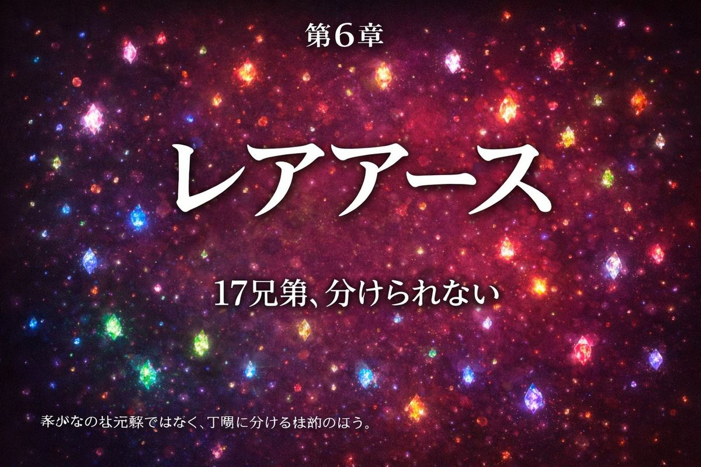
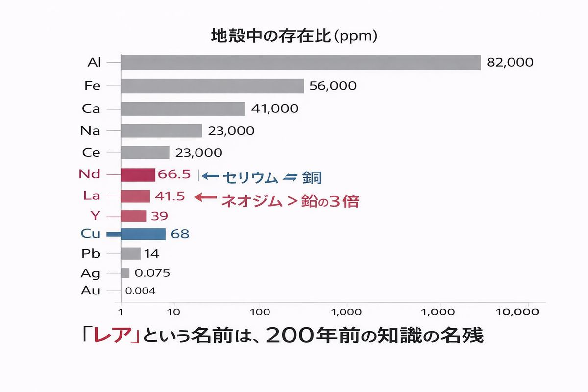
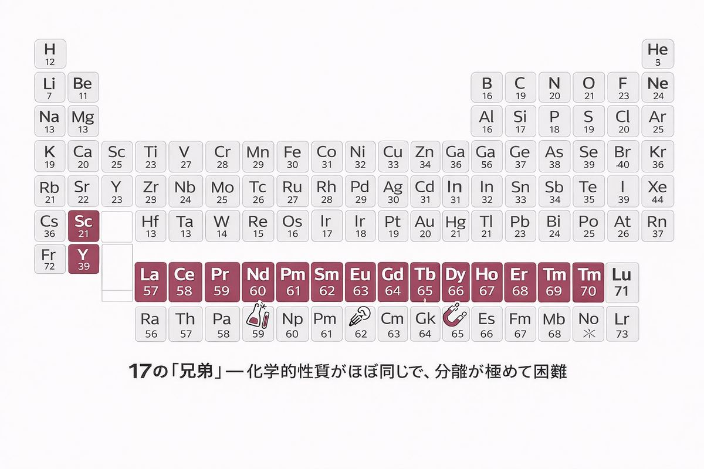
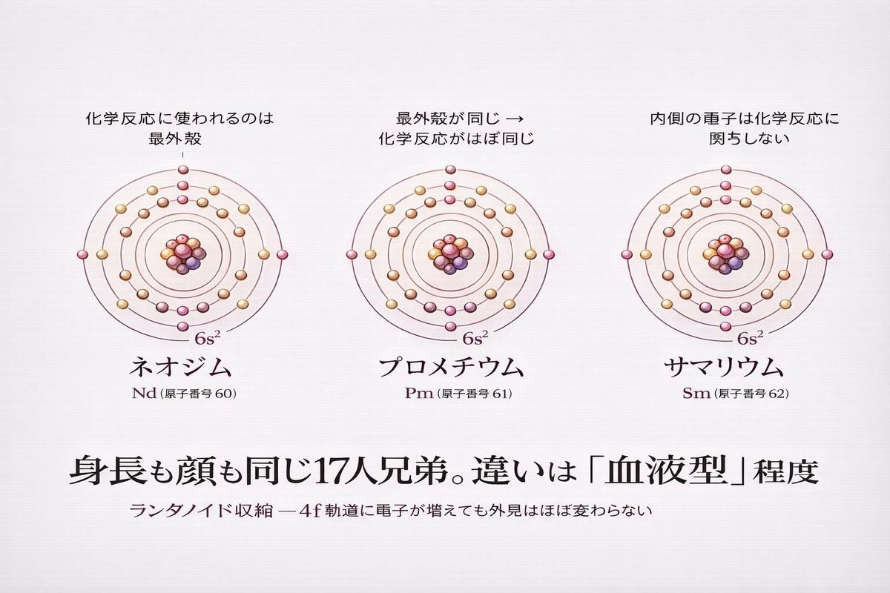
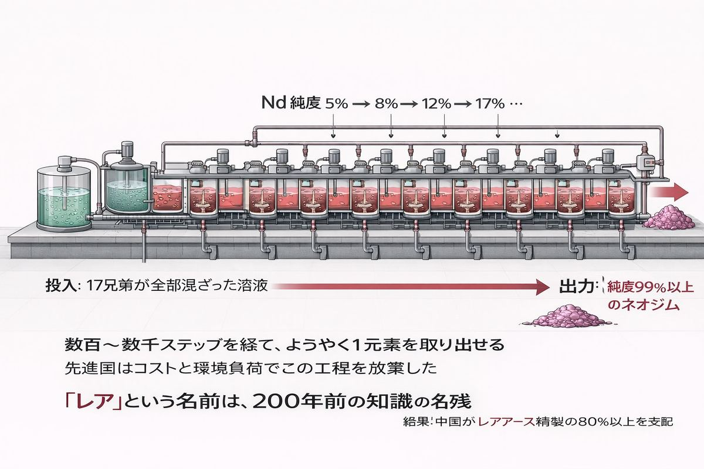
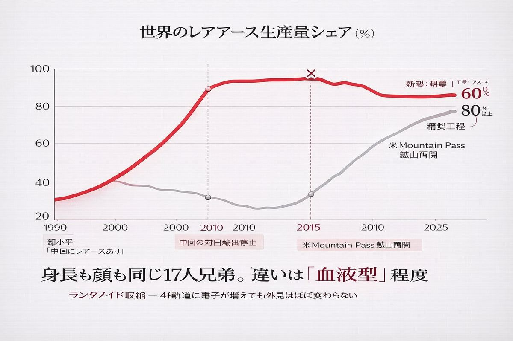
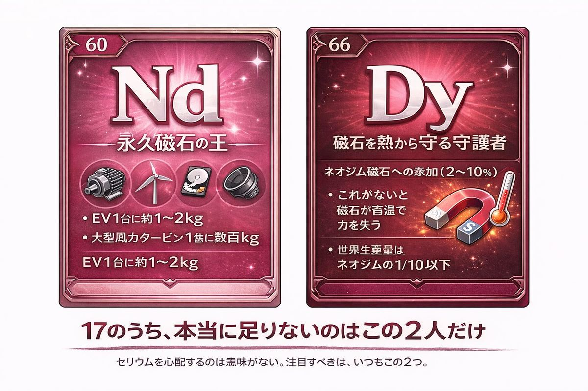
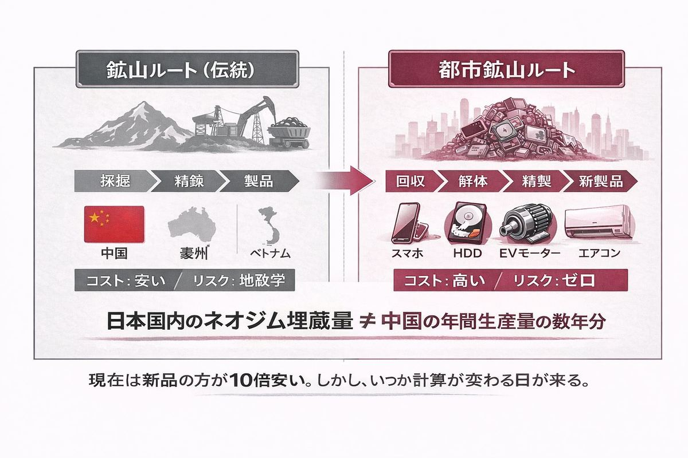

名前は嘘をつく。 ── 化学者なら誰もが知っている格言（ただし出典不明）
A. 17全部 B. 5〜6種 C. 2種だけ
正解はC。ネオジムとジスプロシウム、たった2つだ。
ニュースで「レアアース不足」と聞くと、多くの人は17種すべてが希少で、すべてが中国に握られていて、すべてが現代文明のボトルネックになっていると思っている。
実際には違う。レアアースの主役は、永久磁石を作るネオジム（Nd）と、その磁石を高温でも使えるようにする添加剤ジスプロシウム（Dy）の2つ。残り15種類は、用途は地味だがそれぞれの分野で使われていて、量で見れば十分にある。
たとえばセリウム（Ce）。レアアース全生産量の約38%を占める最大派閥だが、地殻中の存在比は銅とほぼ同じ。希少どころか、ありふれた元素だ。
レアアースで本当に問題なのは「希少さ」ではない。兄弟同士があまりにも似すぎていて、分けられないことなのだ。

レアアース（rare earth elements / REE）と呼ばれる17元素は、周期表のランタノイド系列（La〜Lu）の15元素＋スカンジウム（Sc）＋イットリウム（Y）の総称だ。
名前の由来は、18世紀末から19世紀にかけての発見史にある。1787年、スウェーデンのイッテルビー村近くの鉱山で、当時の化学者にとって見慣れない酸化物（earth）が見つかった。それまで知られていなかった「珍しい土」だから、rare earth と呼ばれた。
ところが20世紀になって地球化学が進歩すると、これらの元素は実はかなり豊富にあることが分かった。地殻中の存在比で並べると：
| 元素 | 地殻中存在比 (ppm) | 比較 |
|---|---|---|
| セリウム (Ce) | 約66 | 銅（68）とほぼ同じ |
| イットリウム (Y) | 約33 | 鉛（14）の2倍以上 |
| ランタン (La) | 約39 | コバルト（27）より多い |
| ネオジム (Nd) | 約42 | ニッケル（90）の半分 |
| ユーロピウム (Eu) | 約2.1 | 銀（0.075）より多い |
セリウムは銅と同じくらい豊富だ。イットリウムは鉛より多い。ユーロピウムでさえ銀より28倍多い。
つまり「レア」という名前は、200年前の知識の名残なのだ。本当はレアでも何でもない。
しかし名前を変えるには遅すぎた。世界中の論文、教科書、政府文書、企業レポートが「レアアース」を使っている。名前は嘘をつくが、嘘も100年経てば事実のように扱われる。

問題は別のところにある。
ランタノイド系列の15元素は、化学的性質が驚くほど似ている。原子番号で1つ違う隣同士（たとえばネオジム60とプロメチウム61）の化学反応性は、ほとんど見分けがつかない。
なぜそうなるのか。理由は電子配置にある。ランタノイド系列の元素は、周期表の他のグループと違って、原子番号が増えても最外殻の電子配置がほぼ変わらない。新しく追加される電子は内側の4f軌道に入っていく。化学的性質は最外殻電子で決まるから、内側がいくら変わっても外見上は同じ顔のままだ。
これは、双子の兄弟が17人いるようなものだ。身長も顔も性格もほぼ同じ。指紋を取ってもほとんど同じ。違うのは血液型がちょっとずつ違う程度。
化学者は彼らを「兄弟」と呼ぶ。それくらい似ている。

似ているということは、化学的に分けるのが地獄のように難しいということだ。
通常の元素分離は、化学反応の違いを利用する。鉄と銅を分けたいなら、酸化されやすさが全然違うので、簡単に分けられる。金と銀でも、塩酸への溶けやすさが違う。これが「化学的分離」だ。
レアアースには使えない。17兄弟は化学反応がほぼ同じだから、ひとつの溶液に入れると全部一緒に振る舞う。
唯一の解決策は、気が遠くなるほど何度も繰り返すことだ。
代表的な手法が「溶媒抽出法」と呼ばれる工程で、原料を溶かした水溶液と有機溶媒を接触させ、わずかに溶けやすさが違う元素を少しずつ振り分けていく。1回の工程で得られる差は数%程度。これを何百回、何千回と繰り返して、ようやく1つの元素を純粋に取り出せる。
製錬工場の中には、この溶媒抽出装置が延々と並んでいる。数キロメートルにわたるパイプラインの先で、ようやく1種類のレアアースが純度99%以上で出てくる。
施設はとてつもなく大きく、運転には大量の薬品とエネルギーがかかり、排水処理も難しい。先進国はこの工程を国内に置きたがらない。汚いし、儲からないし、環境規制が厳しい。
そこで世界の分離工程が、ある一つの国に集中することになった。

1992年、中国の最高指導者だった鄧小平は南方視察の途中でこう言ったとされる。
「中東に石油あり、中国にレアアースあり。」
当時、中国の経済はまだ離陸期だった。しかし鄧小平は、レアアースが将来の戦略資源になることを見抜いていた。中国政府は内モンゴル自治区のバヤンオボ鉱山を中心に、大規模な開発と精錬施設を整備した。
その結果、2000年代までに中国は世界のレアアース生産の95%以上を占めるようになった。生産だけでなく、分離・精製の工程をほぼ独占した。先進国がコストと環境を理由に手を引くあいだに、中国は静かにこの市場を握った。
鄧小平の予言は、30年後に的中した。

2010年9月、東シナ海で中国漁船と日本の海上保安庁巡視船が衝突した。日本側は船長を逮捕、中国は強硬に抗議した。
そして数日後、中国は対日レアアース輸出を事実上停止した。
日本のハイテク産業は震撼した。トヨタ、ホンダ、パナソニック、ソニー──これらの企業はネオジム磁石なしにはハイブリッド車もモーターも作れない。供給が途絶えれば、生産ラインが止まる。
価格は数ヶ月で10倍に跳ね上がった。日本政府はパニック対応に追われ、緊急の備蓄計画と代替調達ルートの開拓に走った。オーストラリア、ベトナム、カザフスタン、アメリカ、カナダ──世界中で「中国以外のレアアース」を探す動きが一斉に始まった。
WTOへの提訴、独自の精錬技術開発、海底鉱床の調査、リサイクルシステムの整備。日本がこの15年間でレアアースに対して取ってきた政策のほとんどは、2010年9月のあの一件から始まっている。
中国の対日レアアース禁輸は約2ヶ月で解除されたが、教訓は世界中に残った。ある資源を一国に依存するということは、地政学的な人質になることを意味する。

ここまで読んで、「レアアースの問題」が「希少さの問題」ではないことが見えてきたと思う。本当の問題は3つある。
最後の点を、もう少し詳しく見てみる。
| 元素 | 主要用途 | 代替可能性 |
|---|---|---|
| ネオジム (Nd) | 永久磁石（EVモーター、風力タービン、HDD、スピーカー） | 困難 |
| ジスプロシウム (Dy) | ネオジム磁石の高温耐性向上 | 極めて困難 |
| セリウム (Ce) | 触媒、研磨剤、ガラス添加 | 一部代替可能 |
| ランタン (La) | 光学ガラス、ニッケル水素電池 | 一部代替可能 |
| ユーロピウム (Eu) | 蛍光体（赤色LED） | 可能 |
| イットリウム (Y) | LED蛍光体、セラミック | 一部代替可能 |
ネオジム磁石は、現代の電化製品ほぼすべての心臓部だ。EVのモーター1台に約1〜2 kg、大型風力タービン1基に数百kgのネオジムが必要になる。これに代わる磁石素材は、いまのところ存在しない。
ジスプロシウムはさらに重要だ。ネオジム磁石は高温（200℃前後）で磁力を失う。EVモーターも風力タービンも作動中は熱くなるから、ジスプロシウムを2〜10%添加することで耐熱性を確保している。これがないと、いくらネオジムがあっても実用にならない。
そしてジスプロシウムの世界生産量は、ネオジムの10分の1以下。中国の特定地域でしか経済的に採掘できない。本当に「足りない」のはこの元素だ。
セリウムを「レアアース」と呼んで在庫を心配するのは、ほとんど意味がない。問題はネオジムとジスプロシウム、そしてその磁石の供給網全体だ。
「レアアース問題」を語るときは、この2つの名前を覚えていればいい。残りは雑音である。

中国に頼らずにレアアースを調達する方法は、3つしかない。
このうち日本が優位に立てるのは3つ目だ。
廃棄されたHDD、スマートフォン、EVモーター、エアコンのコンプレッサー、風力タービンのギアボックス──これらすべてに、ネオジム磁石が使われている。日本国内に「眠っているレアアース」の総量は、中国の年間生産量の数年分とも言われる。
問題は回収コストだ。1台のスマホからネオジムを取り出すには、解体・分離・精製の工程が必要で、新品を中国から買うほうが10倍以上安い。
しかし、コストの計算が変わる瞬間がある。たとえば中国がもう一度禁輸に踏み切ったとき。あるいは炭素税が導入されて、新規採掘の環境負荷が価格に反映されたとき。そのとき、都市鉱山は突然「世界一豊かな鉱山」になる。
日本の戦略は、そのときに備えて回収技術と精製インフラを維持しておくことだ。これは次章で詳しく扱う。
レアアースの章を、化学者の視点で締めくくりたい。
17の元素には、それぞれ名前がある。ランタン、セリウム、プラセオジム、ネオジム、プロメチウム、サマリウム、ユーロピウム、ガドリニウム、テルビウム、ジスプロシウム、ホルミウム、エルビウム、ツリウム、イッテルビウム、ルテチウム、スカンジウム、イットリウム。
呼びにくい名前ばかりだ。ほとんどが発見地（イッテルビー村）や神話（プロメテウス、ニオベ）から取られている。
化学者は溶媒抽出装置の前で、これらの兄弟をひとりずつ、違う部屋に分けていく。ネオジムさんはこちら、ジスプロシウムさんはあちら。何百回、何千回と振り分けて、ようやく純粋な状態にする。
この地味な工程が、あなたのスマホのバイブレーション、EVの加速、風力発電所の回転、ノイズキャンセリングヘッドホンの音、すべてを支えている。
「レアアース」という名前は嘘だ。希少なのは元素ではなく、彼らを丁寧に分けてくれる施設のほうだ。そしてその施設は、いま、ほとんどが一つの国に集中している。
名前は嘘をつく。しかし、嘘の名前の中にも、いつか本当の問題が見えてくる。